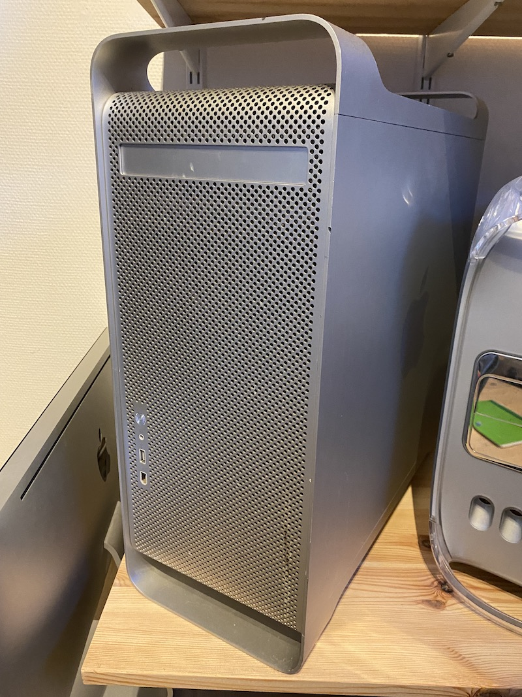

Power Mac G5 (2002)
I 2003 var det slut med at opdatere Power Mac G4-linjen og i stedet lancerede Apple en ny maskine med nyt design og med den kraftfulde PowerPC G5-processor.
- PowerPC G5 1,8 GHz processor
- 512 MB ram
- 160 GB harddisk
- SuperDrive
- Vægt: 20,1 kg
Læs mere på Wikipedia
Fortsæt turen
Kig til venstre •
Kig op •
Kig til højre